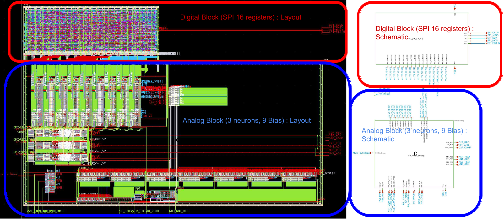
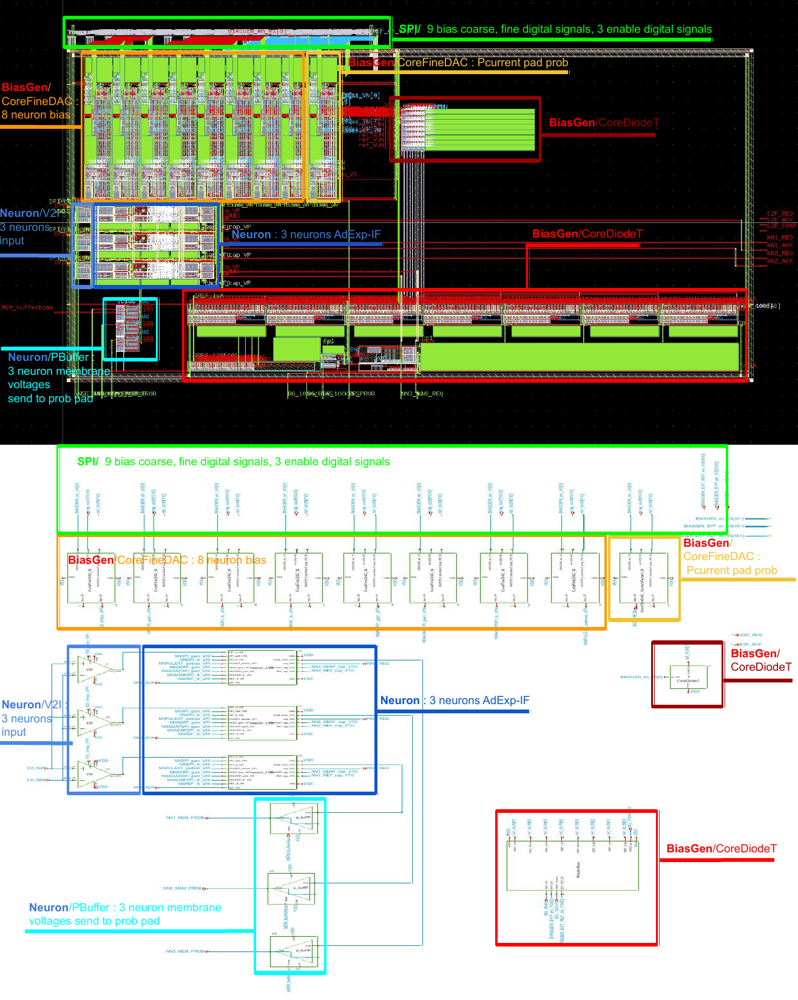
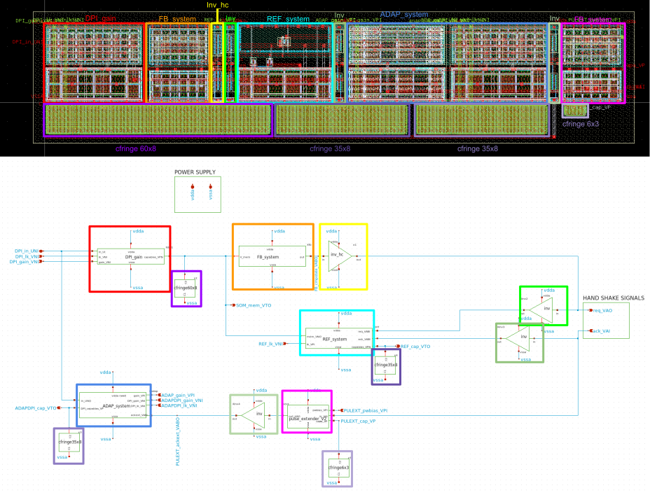
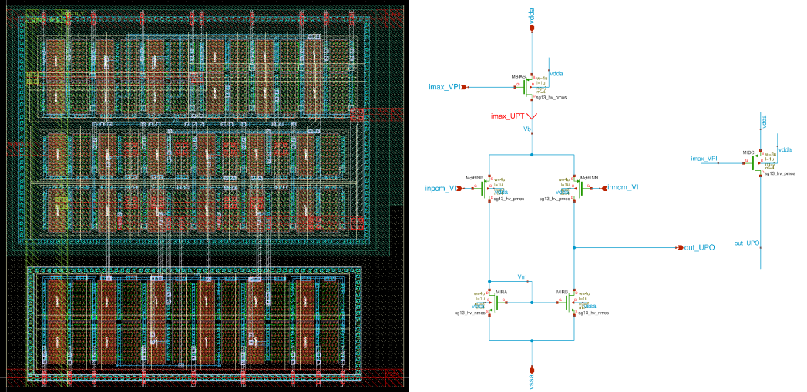
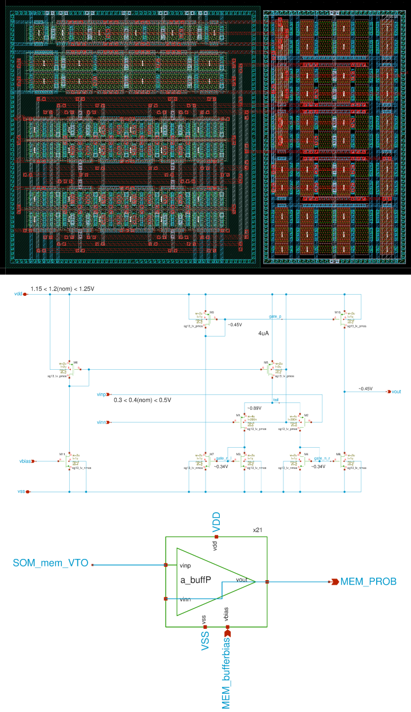
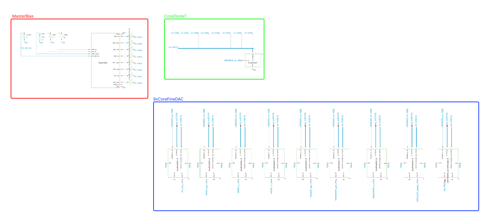

OpenSourceSwiss INI Block Chip Documentation
This documentation is for the Analog Neuron Block (3 neurons AdExp-IF test bench) on the Open Source Swiss Chip project. This Chip have been fully design using the open source tools of IIC-OSIC-TOOLS docker. The chip is not made to be used in a real application but to be used as a test bench for the IIC-OSIC-TOOLS docker on the IHP 130nm PDK sg13cmos5l.
Overview
The chip have 3 neurons with a bias generator of 9 bias current to set the neurons bias. The bias of the current bias generator are set by a 11 bits comming from a spi block.

We can divide the chip in 2 main blocks, the analog part and the digital part.
Analog Part
This part can be separate in 2 main system :
-
The Neuron System composed of : 3 neurons Adaptive Exponential Integrate-and-Fire (AdExp-IF) feed by one V2I each with the exact same input for the 3. 3 buffer to prob the membrane voltage of the neurons.
-
The Bias Generator composed of : 8 CoreFineDAC that output the bias current of the neurons, 1 CoreFineDAC that output the bias current that go directly to a pad to be prob off chip. The MasterBiais that generate the 8 coarse bias current from 100fA to 1uA, The CordeDiodeT that take current from the MasterBias and output this currents as valtge to the CoreFineDACs.

Neuron System
Here we detail the computation core of the chip with the :
-
3 neurons
-
3 V2I (neuron input current)
-
3 Pbuffer (neuron membrane voltage probing)
Neuron
The neuron is an Adaptive Exponential Integrate-and-Fire (AdExp-IF) neuron.

On this neuron we can find 3 main blocks :-
The Integrate and Fire block :
-
The
DPI_gaintake the input current from theV2IDPI_in_UNI and multiply it by a gain current set by DPI_gain_VNI and divide it by a leak current set by DPI_lk_VNI, -
The membrane capacitor
cfringe60x8of 1.1pF integrate theDPI_gainoutput current and the membrane voltage that follow a function almost proportional to SOM_mem_VTO \(= \log(\frac{I_{gain} I_{in}}{I_{lk}})\) when charging. When the input current of the neuron DPI_in_UNI is null the membrane voltage will discharge with a time constant of \(\tau = \frac{C_{mem}}{I_{lk}}\). -
The
FB_systemtake the membrane voltage SOM_mem_VTO and send it to an inverter with a upper threshold fixed around 410mV. The output of the inverter is the spike output asynchronous digital signal that after a inversion and cleaning by a new inverter with a high current ouputinv_hcreq_VAO. -
The
REF_systemtake the spike output request req_VABO and acknowledge ack_VABO and reset the membrane voltage SOM_mem_VTO to 0V in case of a spike. The reset last a certain refractory set by the leakage current REF_lk_VNI of the refractory capacitorcfringe38x8with a time constant of \(\tau = \frac{C_{ref}}{I_{lk}}\).
-
More neuron details
for SOM_mem_VTO \(>\) DPI_gain_VNI :
SOM_mem_VTO \(= \frac{1}{k} \times \log(\frac{I_{gain} I_{in}}{I_{lk}} \times \frac{1}{I_{0}(1+\tau \cdot k \cdot \frac{dVmem}{dt})} )\)
V2I
As input for the 3 neurons we use 3 V2I (Voltage to Current)

The V2I take 2 voltage inputs : - the positive input inpcm_VI - the negative input inncmn_VI - the output current out_UPO feed directly the neuron with a positive current following the equation :
out_UPO \(=\) imax_UPT \((1+\tanh(\frac{k_{p}}{2}\cdot(\)inpcm_VI \(-\) inncmn_VI \()))\)
PBuffer
To probe the membrane voltage of the neurons we use 3 buffers

The P-type buffer take the membrane voltage SOM_mem_VTO on is vinp and the negative input vinn and output are tie together (negative feedback) to deliver the isolated membrane voltage MEM_PROB to the pad. We use P-type OTA so the pmos transistor are in saturation whis low voltage because the membrane voltage varied from 0V to 0.45V.But even with the well set bias MEM_bufferbias at 0.25V the output is clipped over 40mV
More buffer details
See buffer test bench.
Bias Generator

Here we detail the bias generator with the :
-
8 CoreFineDAC (generate the bias currents for the neurons and the V2Is)
-
Probe CoreFineDAC (generate the bias current that go directly to a pad to be probe off chip)
-
Master Bias (generate the coarse bias current)
-
CorediodeT (take the coarse bias current and output it as voltage to the CoreFineDACs)
CoreFineDAC
The CoreFineDAC is compose of :
-
Selmux (select the one of the 8 coarse current from the MasterBias but as voltage because of the CorediodeT conversion)
CoreDiodeT
MasterBias
Chip Inputs/Outputs
Test Benchs
neuron + V2I
this is the test bench for the neuron and the V2I.